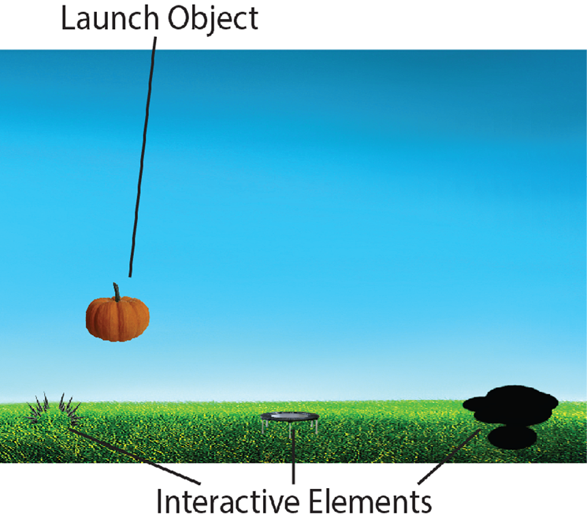
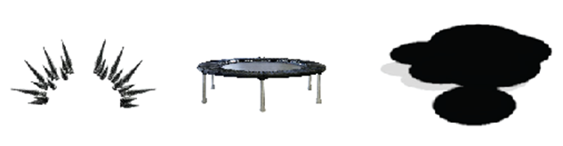

Using ActiMo for Therapy
Setting Up Your Device
Installing Drivers for USB
Receiver
Install Adobe Air and Run Program
Preparing for Usage
Using Your Device
Caring for Your Device
Cleaning
Storage
Fixing Issues
Setting Up Your Device
Installing Drivers for USB
 1. Plug the receiver into your computer via USB.
 2. If Windows prompts you that the device drivers failed to install,
download the appropriate drivers at USB Receiver Drivers.
At this point, Windows should recognize the device.
Installing Adobe Air and Running Program
 1. Install Adobe Air by following the instructions at the Adobe installation site.
 2. Double click on ActiMo.swf file from the GitHub Folder and the
application should launch within Adobe air. (NOTE: If it does not, you may need
to change the file association by right-clicking and using the Open With....
command)
 3. Install python by following the instructions at Python 2.7.5 release. This
will require some knowledge of command prompt.
Preparing for Usage
 1. Simply flip the power switch on the top face of the ActiMo
device to begin transmitting data to the computer.
2. Point the ActiMo at the screen from roughly where the child will be located.
Press X on the windows remote to start the calibration while the ActiMo remains
pointed at the screen. This should only take a few seconds.
3. Use the velcro strap to attach the device to the ankle or wrist with the
power button opposite the contacting face and pointing towards the ground when
standing in a relaxed state.
Using Your Device
General Usage
Profile Selection
Create Profile: Create a new profile
Edit Profile: Edit the name on a profile
Delete Profile: Delete a selected profile
Profile Tracking

On this screen, you can visualize patient progress. First, choose a limb at the
top, then choose a direction of movement in the submenu on the left.
Nullifying Bad Movements
A movement is being recorded
Each time the game records an input from the child this icon will display in the bottom right corner. If you would not like for this action to affect the patient data progress (perhaps the movement was a bad movement that involved heavy compensation), press button X to delete the last saved data point. If you missed this window to delete, you can hit button Y to nullify all data recorded up to the current point in the level.
Games
Arm Games(Bamboo and Pinata)
Setting up
1. In the main menu, select the button titled ‘Play’ and press X on the
Windows Remote.
2. This will bring up a menu where all the games can be selected to be played.
Select one and press X.
3. A menu will pop up where game options can be selected. Navigate the buttons
using the windows remote. When a particular option is selected, the button will
become highlighted.
4. Difficulty levels can also be selected here. The default difficulty is Easy.
The difficulty makes different things happen in each game.
5. You must also select if the patient is using their right or left arm.
Attach the controller to the wrist
6. Attach the controller to the specified arm as shown above.
7. Once ready with these selections, start the game by selecting ‘Done’ and
pressing X!
8. A short tutorial will play to explain how to play the game. To skip this
section, press S on the Windows remote.
Screen Layout
-In the middle of the screen is the bamboo, pinata, or ball, referred to as
the object
-In the top right is the object's health bar, which depletes as the player
successfully swipes at the object
-In the top left is the player's score, which indicates how many objects they
have destroyed
-Occasionally a timer will appear directly above the object, which indicates
how much time the player has left to deplete its health
Playthrough
Target Objects: Pinata (Left); Bamboo (Right)
-Swipe the controller to hit (and eventually destroy) the target object.
Swiping harder or with a larger range of motion will result in more damage to
the target object.
-Certain target objects such as bamboo can only be be hit from a certain
direction.
-Push the button X on the remote to bring up the mid-game menu. From here, you
can resume, pause, change the difficulty or end the game.
Leg Games(Pumpkin Punt)
Setting up
1. Attach the motion sensitive strap to the ankle as shown below.
Attach the controller to the ankle
2. Once ready, start the game by selecting a difficulty and pushing the play
button.
3. A short tutorial will play to explain how to play the game. To skip this
section, press X on the Windows remote.
Screen Layout

Playthrough
-Kick your forward to launch the pumpkin. A stronger kick with a larger
range of motion will result in a more powerful launch..

Interactive Elements: Spikes (Left); Trampolines (Center); Oil slicks (Right)
-The launch object will fly through the air and interact with the interactive
elements. Spikes will stop the launch object’s flight, mini-trampolines will
increase the height of the trampolines and oil slicks will increase the speed
of the launch object.
-Push the button X on the remote to bring up the mid-game menu. From here, you
can resume, pause, change the difficulty or end the game.
Charging
1. Plug male USB-A to USB-A cable into device and connect to wall charger or any other device with a female USB-A connection capable of outputting power. Charging will automatically terminate when battery is full.
Caring for Your Device
Cleaning
1. Wipe gently with disinfectant or similar cleaning products.
2. Avoid excessive moisture or getting liquid inside the device. Dry promptly.
Storage
1. Keep the device below 105°F and 50% relative humidity. Excessive heat can cause the plastic to become soft and deform.
Fixing Issues
If on-screen movements seem incorrect...
Power cycle ActiMo by flipping the switch off and back on. Ensure that you are
not within a foot of any electronics or sources of magnetic interference.
If ActiMo gets hot during charging or use...
Unplug and discontinue use. It is likely that the battery is shorted. Refer to
the DIY section for battery replacement and either resolder the battery or
replace it.